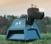
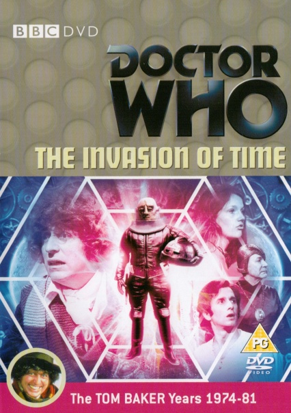

Эра Четвертого Доктора (15 сезон)
<<< НАЗАД ||| 6. Временное вторжение ||| ДАЛЬШЕ >>>
Субтитры: Русские и Английские |  |
|---|---|
с обновленными спецэффектами Субтитры: Русские и Английские | |
с обновлением визуальных эффектов (cunningmunki) Субтитры: отсутствуют | |
The Invasion of Time
Дата выхода: 4 февраля - 11 марта 1978
Формат: 6 эпизодов по 25 мин.
 |  |
Доктор возвращается на Галлифрей и заявляет права на пост президента Повелителей Времени — но за этим стоит сложная игра, в которой союзники и враги меняются местами, а подлинная угроза скрывается за первым вторжением. Лила, изгнанная из Капитолия, не теряет веры в Доктора и собирает в пустошах отряд из изгнанников и аутсайдеров. Последняя серия Лилы и К-9 модели I: воительница остаётся на Галлифрее, а Доктор достаёт из хранилища ТАРДИС ящик с надписью «К-9 МII». Шестиэпизодная история примечательна съёмками интерьеров ТАРДИС в заброшенной больнице — впервые зрители увидели сад, бассейн и лабиринты корабля изнутри.
VHS - март 2000 |   DVD+Boxset - 5 мая 2008 | Blu-ray - 18 марта 2024 * Версия в нашей группе |
|---|


Трейлер: